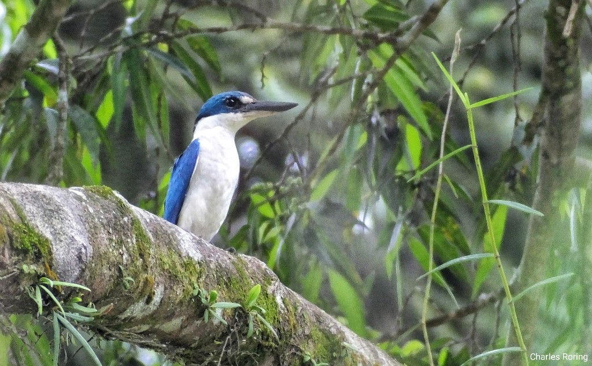

Ini adalah burung Cekakak Sungai (Todiramphus chloris) yang saya foto di Tomohon, kawasan dataran tinggi Minahasa. Nama bahasa Inggrisnya adalah: Collared Kingfisher.
Predator Alami di Daerah Pertanian
Makanan burung ini adalah serangga seperti belalang, laba-laba, kadal, cacing, kepiting, bekicot, katak, ikan sungai, dan ular kecil.
Burung ini mudah dijumpai di tepi hutan, di tanah pertanian kering, sungai dan areal persawahan. Kebanyakan para petani menyukai dan melindungi keberadaan burung Cekakak Sungai karena merupakan predator alami bagi hama tanaman pertanian mereka seperti belalang dan ulat pemakan daun.
Para petani di Minahasa menanam berbagai macam tanaman pertanian seperti padi, jagung, pepaya, pisang, tomat, cabe, wortel, buncis, kentang, bawang daun, kol, kacang merah, kacang hijau, kacang tanah, rambutan, duku, kelapa, cengkih, pala, vanili, dan lain-lain.

Mereka menjual hasil pertanian ini di kota-kota di Sulawesi Utara dan di wilayah timur Indonesia seperti Tomohon, Tondano, Langowan, Kawangkoan, Sonder, Bitung, Balikpapan, Ternate, Ambon, Sorong, Manokwari, dan Jayapura.
Di daerah pertanian, kebun, serta hutan hujan tropis di dataran tinggi Minahasa - Provinsi Sulawesi Utara, ada banyak burung yang bisa diamati oleh wisatawan pencinta burung. Beberapa di antaranya adalah:

- Kutilang - Sooty-headed Bulbul (Pycnonotus aurigaster)
- Kekep Babi - White-breasted Woodswallow (Artamus leucorynchus)
- Serindit - Sulawesi/ Sulawesi Hanging-parrot (Loriculus stigmatus)
- Kepudang kuduk-hitam - Black-naped Oriole (Oriolus chinensis)
- Bondol Rawa - Chestnut Munia (Lonchura atricapilla)
- Kuntul Kerbau Timur - Eastern Cattle Egret (Bubulcus coromandus)
- dan masih banyak lagi.

Wisata Alam Pengamatan Burung
Jika ada di antara para pembaca yang berminat untuk menikmati aktivitas wisata pengamatan burung sambil jalan-jalan melihat keindahan pemandangan alam di Minahasa, serta membutuhkan jasa pemandu, silahkan menghubungi saya (Charles Roring) lewat WA: +6281332245180 atau email: peace4wp@gmail.com.